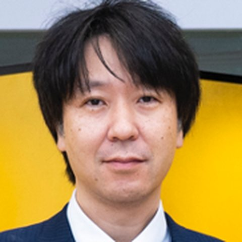
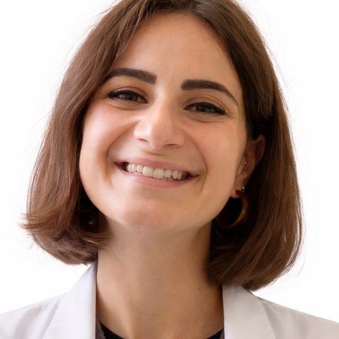
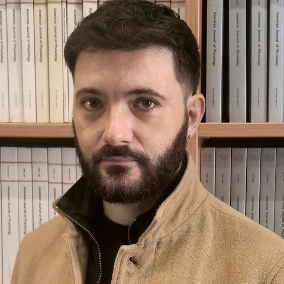
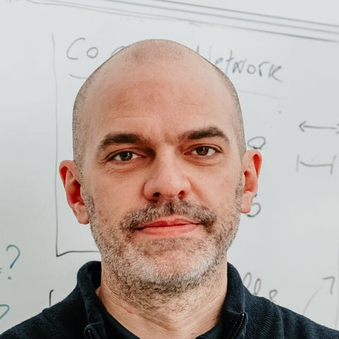
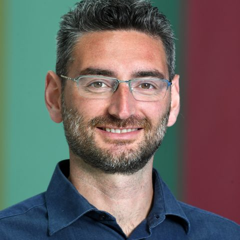
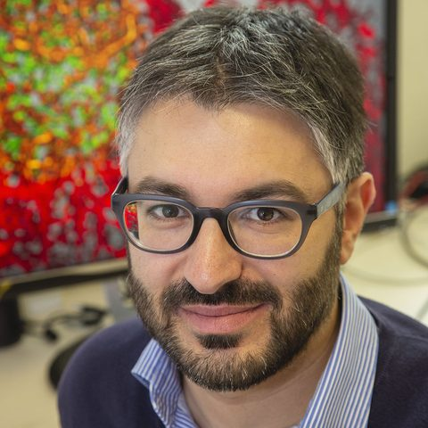
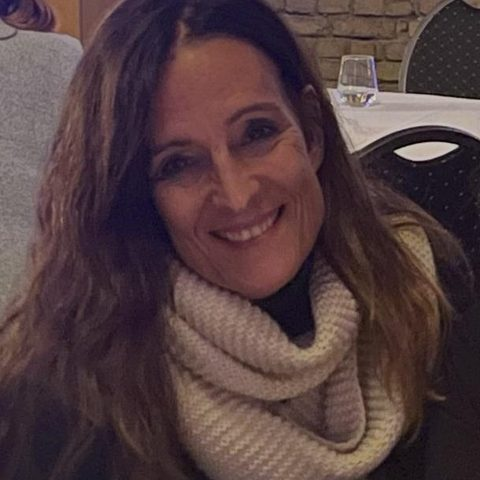
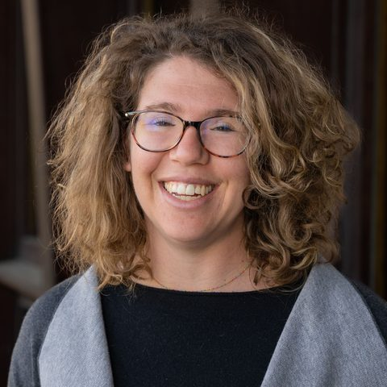

-
Registration and poster set-up
-
Opening, Nicolò Meneghetti and Eleonora Vannini
-
Session 1 10:30 – 12:35
Chairs: Nicolò Meneghetti and a chair from the CNR Institute of Neuroscience
-

Daisuke Kawauchi Department of Neuro-Oncology, Institute of Brain Science, Nagoya City University Graduate School of Medical Sciences, Nagoya, Japan
From Neural Circuits to the Epigenome: Decoding Glioblastoma–Brain Interactions
-

Marta Scalera Institute of Neuroscience, Italian National Research Council (CNR), Pisa, Italy
GABAergic Circuit Activation Induces a Therapeutically Responsive State for anti-PD-L1 Immunotherapy in Glioblastoma
-

Stefano Garofalo Department of Physiology and Pharmacology, Sapienza University of Rome, Italy
Innate immunity modulates peri-tumoral neuron activity controlling glioblastoma progression
-
Elisabetta Stanzani
A comprehensive immune profiling of the SB28 glioblastoma model reveals progressive local and systemic immune remodeling
-

Davide Ceresa DIMES, University of Genoa, Italy
Intraclonal diversification and cell competition shape evolutionary trajectories in Glioblastoma
-
Lunch
-
Poster session
-
Session 2 14:05 – 17:30
Chairs: to be announced (CNR Institute of Neuroscience and Sant'Anna School of Advanced Studies)
-

Francesco Raimondi Laboratorio di Biologia (BIO@SNS), Scuola Normale Superiore, Pisa, Italy
Learning and leveraging biological mechanisms for personalized oncology
-

Gaetano Gargiulo Max Delbrück Center for Molecular Medicine, Berlin, Germany
Synthetic genetic tracing of glioblastoma cell states
-

Giorgio Seano Institut Curie, Paris-Orsay, France
Treating a Moving Target: How Surgery and Therapy Reshape Residual Glioblastoma
-
Pasquale Ciarletta
Title to be announced
-
Coffee break
-

Chiara Maria Mazzanti Fondazione Pisana per la Scienza, Pisa, Italy
Decoding a Novel Physical-Biological Phenotype in Glioblastoma to Discover Molecular Vulnerabilities and Therapeutic Strategies
-

Chiara Bastiancich Institute of NeuroPhysiopathology (INP), Marseille, France
Advancing local glioblastoma therapies through targeting of the post-surgical margins
-
Anna Luisa Di Stefano Division of Neurosurgery, Livorno Hospital, Azienda USL Toscana Nord-Ovest, Italy
Molecular Neuro-Oncology: Bridging Surgery, Research, and Clinical Care
-
Concluding remarks, Nicolò Meneghetti and Eleonora Vannini